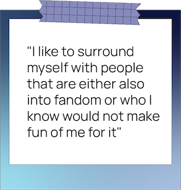

“For some reason, it felt natural to start thinking up my own characters, mimicking the writing styles and character arcs I was familiar with at the time,” the now-second-year RTA media production student says. She adds that with My Little Pony, the show gave specific traits to each type of pony and explored why Equestrian society was the way it was.
Invested in these personalities, she’d often come up with ideas to rewrite the show in her own way. In fanfiction, this is known as worldbuilding: the process of constructing an imaginary world based on an established fictional universe. Nadler would watch My Little Pony: Friendship Is Magic and simultaneously rewrite the episodes, sometimes introducing new characters from other shows into her work.
As she started writing, Nadler quickly realized she wasn’t alone. She discovered an online community—or ‘fandom’—made up mostly of adults who also enjoyed the show and would create their own content known as ‘fanfiction’ using original episodes as reference.
“Little me decided that I was going to write my own stories about other characters that I liked as ponies,” Nadler recalls. “It wasn't the best of all time, obviously. I was very young. But I was just having a lot of fun and I was putting characters into new situations.”
Throughout middle school, Nadler would "religiously" read fanfiction based around shows such as Avatar: The Last Airbender and Fullmetal Alchemist: Brotherhood, a Japanese Anime. In Grade 8, she came up with the idea to merge a character inspired by The Last Airbender into Fullmetal Alchemist: Brotherhood . With the show opened on Netflix in one tab and Google Docs open in another, Nadler would carefully rewrite episode after episode with her own plot. She managed to come up with around 60,000 words—her longest piece of fanfiction ever—before she got bored and left it unfinished.
Nadler continued writing and reading fanfiction throughout high school and university for various fandoms and zines—a published collection of fanfic stories from multiple authors. Her most recent fanfic was published in May 2021 on Archive of Our Own (AO3), a non-profit, open-source repository for fanfiction and other fanworks contributed by users. She says she’d write more if she could, but the pandemic, school work and burnout prevent her from doing so.
Even though her life has gotten busier, she still loves writing fanfiction. she’s never been ridiculed for it, either—something that can be common growing up.

“I like to surround myself with people that are either also into fandom or who I know would not make fun of me for it,” she says. “Plus, I just don't go around talking about it all that much to random people. I've mentioned it to my university friends and I don't think anybody cares.”
However, not all fanfiction writers are as lucky.
In a 2017 article titled “Why fanfiction shaming is a feminist issue,” author Emma Lord recounts her own feelings of both eagerness and shame when it came to writing fanfiction—the most obvious stigma stemming from the fact that a large amount of fanfiction centres female desire.
In her article, Lord cites the successful sales of 50 Shades of Grey and After—fanfictions originally based on Twilight and One Direction, respectively—as prime examples, which have received widespread mockery from their unintended audiences.
Lord also mentions that fanfiction can lend itself to mockery since many writers are often anonymous, unpaid and write with little formal training. That, paired with fanfic being primarily written by women for women, contributes to fanfiction writers and consumers facing ridicule.
Stephanie Burt, a literary critic and English professor at Harvard University, says the delegitimization of fanfiction stems from issues of patriarchy. “We have all been taught to devalue girly things as weak or inconsequential or childish,” she says.
“Fanfic writers…have had to find empowerment and validation horizontally, within community, rather than vertically or directly through money. Community is better anyway. But you still have to make a living.”
It's through this community that fanfiction writers often feel the most comfortable creating their art. A 2013 study published in the Journal of Adolescent & Adult Literacy calls these “affinity spaces,” which offer diverse pathways to participation and an authentic audience, motivating young adults to read, write and design. For many Ryerson students, this community within their fandoms provides them with a safe space to write fanfiction without feeling ashamed.

In 2013, when Malik Wilson was in Grade 11, his law teacher took his class to the movie theatre to see Catching Fire, the second installment in The Hunger Games franchise. Fascinated by the movie’s themes and the dystopian world of Panem, Wilson began reading the books and eventually stumbled upon Hunger Games fanfiction.
Later that year, Wilson began writing his own and published the fanfic on Christmas Day, but took it down because he felt as though he “was too young” and “didn’t write it properly.” Wilson kept with his writing, and between 2015 and 2021, he finished writing two fanfics titled “House of Death” and “Metamorphosis,” which included his own characters he created through a process known as “Submit Your Own Tribute”—where a fanfiction author creates a character that would be inserted into The Hunger Games’ plot.
Now a third-year politics and governance student, Wilson is currently working on another Hunger Games fanfiction called “Atonement,” which he expects to finish this summer. He says he draws inspiration from politics happening in the real world as a way to visualize the world he is creating through his fanfiction.
“I think about the political situations of today and hypotheticals that some people might think of online, and I try [to put] it into my own words. I think of it and I twist it around to fit it in my world,” he says.
Wilson publishes his fanfiction on his own website, but has also used AO3 in the past. He’s never used Wattpad to publish his work as he says he finds it “childish,” and believes the app contributes to the mockery often associated with fanfiction. “When [critics] think of fanfiction and think of sites like Wattpad, [they] think back to their early-high school, late-elementary years,” says Wilson. Wattpad is usually one of the first sites many fans are exposed to when they start reading and writing fanfiction. Wilson, however, says when writers first start writing, their best work can be considered “cringe.”
Like Lord, Meredith Day has also written about the belittlement of fanfiction in connection to female desire based on the demographic of fanfiction writers. She cites a study conducted in 2010 that investigated the demographics of FanFiction.net users through the information that users provided themselves in their profiles. It was determined that 78 per cent of those who disclosed their gender were female and the vast majority of users were also teenagers. Similar to boy bands, fads and other things considered “too girly,” fanfiction falls under the category of things society deems to be “cringy.” This can lead fanfiction writers to struggle to prove themselves as “real” authors feel their art is legitimate.
But Burt says all fanfic authors don’t have to strive to create their own characters in order to prove themselves. “You just have to write fanfic,” she says. “All you can do is try to get it in front of people and see what they say, and figure out whom you should and want to trust,” she adds.
Wilson says he hasn’t felt “shunned” for writing fanfiction, but is aware of the ridicule. “I don't really see it as embarrassing…just a personal hobby that keeps my brain jogging. Not really so much shame in it. Just, you know, something I do.”
Nonetheless, when it comes to eliminating the stigma associated with writing fanfic, Burt says it’s important to continue treating it as art, rather than something critics consider “cringy.”
“Treating fanfic as an art form, publicly, in front of people who aren't in fandom, helps,” Burt says, adding that increasing visibility of successful writers who began in fanfic and having them speak about their experiences would also be beneficial in preventing ridicule.
Though Nadler hasn’t published her fanfiction in almost a year, she isn’t completely done with it. She recently re-watched most of the first season of Avatar: The Last Airbender, and says the hints for upcoming character development left by the show’s writers are even more inspiring now than they were when she was younger.
“I'd really like to get back to writing fanfiction at some point or at least writing in general because I have a lot of ideas floating up in my head,” she says. “It’s a pretty lofty goal, but I’d love to be able to have characters that inspire the next generation of young writers.”